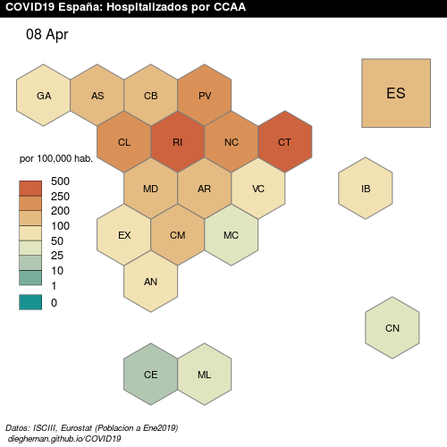
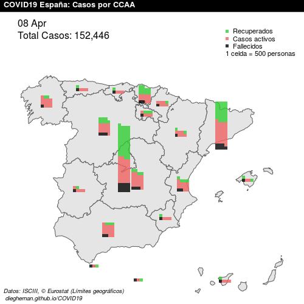
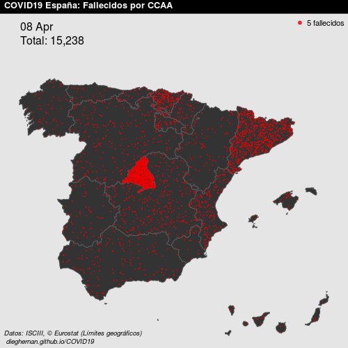
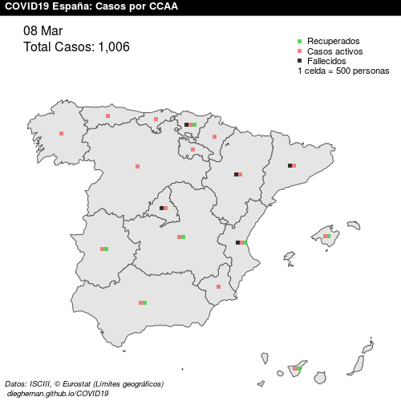
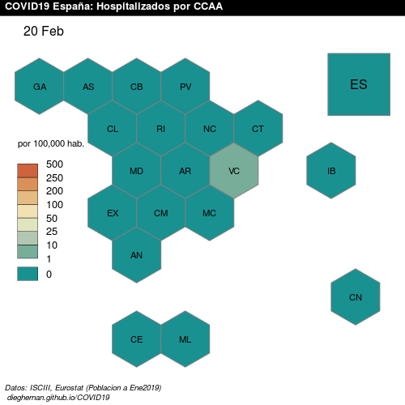
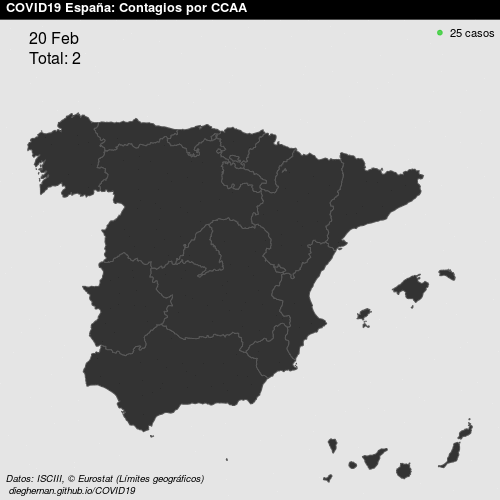
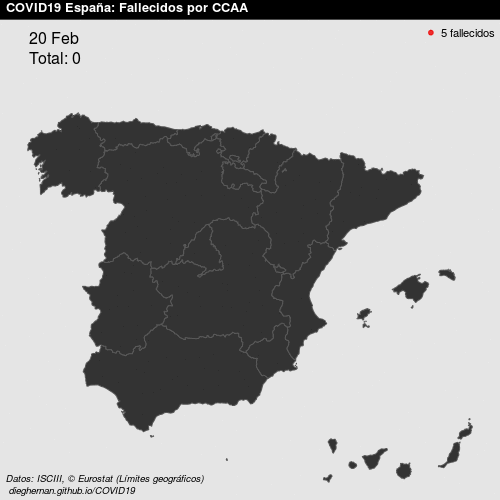

Datos publicados a 09 abril 2020
El proyecto
Proyecto obsoleto: Debido a los cambios en el aprovisionamiento de la información, este proyecto se considera obsoleto y no recibirá más actualizaciones.
Proyecto de código abierto de visualización geográfica de la evolución de la pandemia COVID-19 en España. Se proporcionan gráficos estáticos en formato PNG (500 × 500 píxeles) y visualizaciones de evolución en formato GIF. La página conserva mapas históricos y ya no se actualiza. El archivo de imágenes PNG diarias se encuentra en este repositorio.
Consultar los datos históricos del repositorio.
Fuente de datos
- Datos oficiales proporcionados por el Instituto de Salud Carlos III (ISCIII).
- © EuroGeographics para los límites administrativos.
- Datos de población extraídos mediante el paquete
eurostat(© Leo Lahti, Janne Huovari, Markus Kainu, Przemyslaw Biecek. Retrieval and analysis of Eurostat open data with the eurostat package. R Journal 9(1):385-392, 2017.)
Licencia de uso
Proyecto generado bajo MIT License. Se permite la reutilización siempre y cuando se cite a este repositorio como fuente.
Buzón de sugerencias
Este proyecto se plantea como un proyecto colaborativo. Para sugerencias de nuevas visualizaciones, errores en los datos o cualquier otro asunto relacionado con este proyecto, puedes ponerte en contacto con los administradores a través de este enlace: Buzón.
Datos históricos
Casos por situación en España

Hospitalizaciones por 100.000 habitantes

Contagios en España

Fallecidos en España

Evolución
Las animaciones muestran datos históricos. Para consultar imágenes fijas, utiliza la galería de mapas.
Evolución de los casos en España

Evolución de las hospitalizaciones por 100.000 habitantes

Evolución de los contagios en España

Evolución de los fallecimientos en España

Generado 22 julio 2020 17:27:34 cest con RStudio.